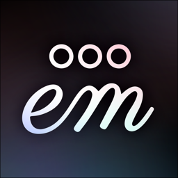

QA-EM

- Client
- Cybersemics Institute
- Product
- em
- Role
- Senior QA Specialist, AI-Assisted QA
- Period
- Dec 2025 – Present
- Type
- Long-term engagement
- Platform
- Web, iOS, Android (Capacitor)
- Tracker
- GitHub Issues and PRs